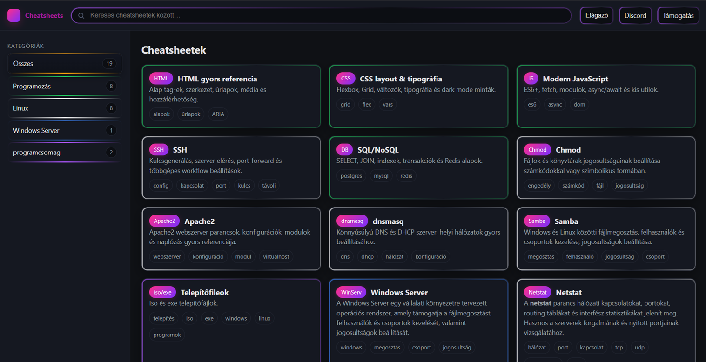
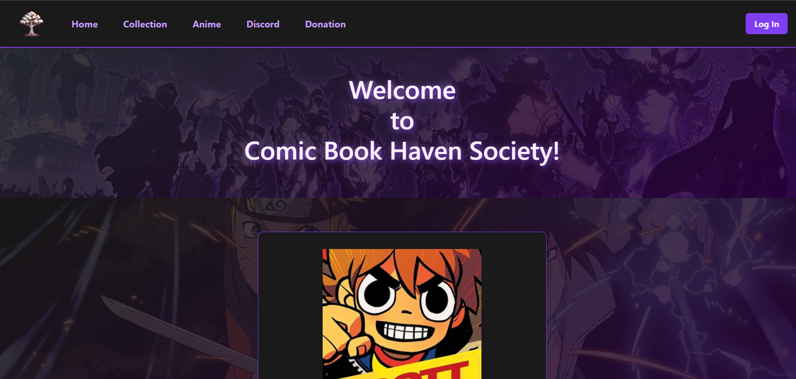

Cheatsheets
Segédlet
Üdvözöllek a weboldalamon!
Ez a weboldal azért készült, hogy egy elosztóként szolgáljon a további projektjeim között.
Y2K
Ikonok, smiley-k és glossy gombok: nosztalgia a 2000-es évek legjobbjaiból.


Comic Book Haven Society
CBHS

Work in progress
CBHS
Work in progress
CBHS